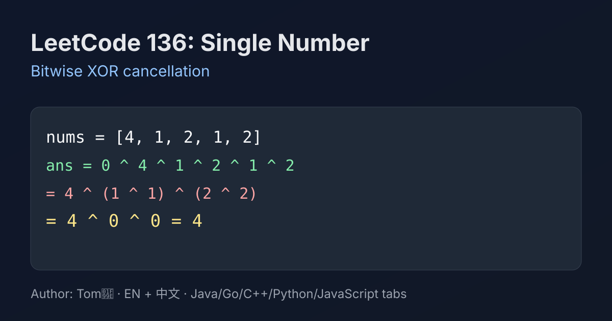

LeetCode 136: Single Number (Bitwise XOR)
LeetCode 136Bit ManipulationXORInterviewToday we solve LeetCode 136 - Single Number.
Source: https://leetcode.com/problems/single-number/

English
Problem Summary
You are given a non-empty integer array where every element appears exactly twice except for one element that appears once. Return that single element. The target is a linear-time solution with constant extra space.
Key Insight
Use XOR properties: a ^ a = 0, a ^ 0 = a, and XOR is commutative/associative. So if you XOR all numbers, every paired value cancels out, leaving only the unique number.
Brute Force and Limitations
A counting hash map works: count frequency and find the element with frequency 1. It is straightforward but needs O(n) extra space. The XOR solution improves space to O(1).
Optimal Algorithm Steps
1) Initialize ans = 0.
2) For each number x in the array, compute ans ^= x.
3) Return ans.
Complexity Analysis
Time: O(n), one pass through array.
Space: O(1), only one accumulator.
Common Pitfalls
- Using addition/subtraction tricks that can overflow in other languages.
- Forgetting this problem’s strict constraint: all other numbers appear exactly twice.
- Overcomplicating with sorting (O(n log n)) when linear time is possible.
Reference Implementations (Java / Go / C++ / Python / JavaScript)
class Solution {
public int singleNumber(int[] nums) {
int ans = 0;
for (int x : nums) {
ans ^= x;
}
return ans;
}
}func singleNumber(nums []int) int {
ans := 0
for _, x := range nums {
ans ^= x
}
return ans
}class Solution {
public:
int singleNumber(vector<int>& nums) {
int ans = 0;
for (int x : nums) {
ans ^= x;
}
return ans;
}
};from typing import List
class Solution:
def singleNumber(self, nums: List[int]) -> int:
ans = 0
for x in nums:
ans ^= x
return ansvar singleNumber = function(nums) {
let ans = 0;
for (const x of nums) {
ans ^= x;
}
return ans;
};中文
题目概述
给定一个非空整数数组，除了某个元素只出现一次以外，其余每个元素都恰好出现两次。请找出这个只出现一次的元素。目标是线性时间并尽量使用常数额外空间。
核心思路
利用异或性质：a ^ a = 0、a ^ 0 = a，并且异或满足交换律与结合律。把所有数字异或一遍，成对元素会互相抵消，最后剩下的就是答案。
暴力解法与不足
可以用哈希表统计频次，再找频次为 1 的元素。这种写法直观，但需要 O(n) 额外空间。异或法把空间优化到 O(1)。
最优算法步骤
1）初始化 ans = 0。
2）遍历数组中每个元素 x，执行 ans ^= x。
3）遍历结束后返回 ans。
复杂度分析
时间复杂度：O(n)，只需一次遍历。
空间复杂度：O(1)，仅使用一个累加变量。
常见陷阱
- 使用求和/求差技巧，跨语言时可能遇到溢出问题。
- 忽略题目前提“其余元素都恰好出现两次”。
- 用排序解法导致 O(n log n)，不满足最优线性时间思路。
多语言参考实现（Java / Go / C++ / Python / JavaScript）
class Solution {
public int singleNumber(int[] nums) {
int ans = 0;
for (int x : nums) {
ans ^= x;
}
return ans;
}
}func singleNumber(nums []int) int {
ans := 0
for _, x := range nums {
ans ^= x
}
return ans
}class Solution {
public:
int singleNumber(vector<int>& nums) {
int ans = 0;
for (int x : nums) {
ans ^= x;
}
return ans;
}
};from typing import List
class Solution:
def singleNumber(self, nums: List[int]) -> int:
ans = 0
for x in nums:
ans ^= x
return ansvar singleNumber = function(nums) {
let ans = 0;
for (const x of nums) {
ans ^= x;
}
return ans;
};
Comments